遊びで植物を育てよう
2024/04/07
梨の受粉をしました。
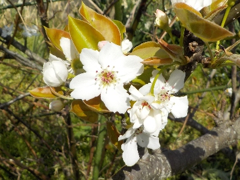
2種類の梨の花が咲いていたので受粉しました。
また数日後にもしようと思います。
【梨TOP】
【果物TOP】
【園芸TOP】
2023/08/10
梨が収獲時期になりました。
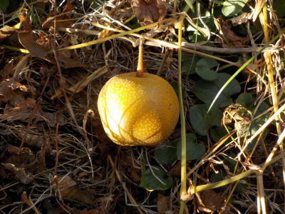
梨を一つ食べてみたら美味しくなっていました。
残りもお盆中に食べようと思います。
【梨TOP】
【果物TOP】
【園芸TOP】
2023/06/24
上に伸びる梨の枝を切りました。
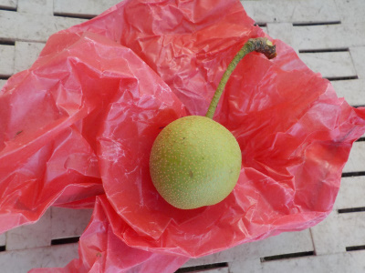
梨の枝って真っ直ぐ上に伸びるものが多いです。
高い場所の作業はしたくないので剪定で低くしてたんですが、間違って実がついてる枝を切ってしまいました。残念。
あんまり考えると悲しいので忘れよう。
【梨TOP】
【果物TOP】
【園芸TOP】
2023/05/28
梨の黒い実が多くありました。
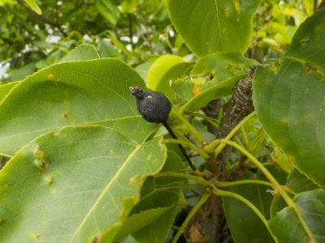
何かの病気で実が真っ黒です。
せっかく受粉して実が出来たのに残念ですね。
【梨TOP】
【果物TOP】
【園芸TOP】
2023/05/05
梨の袋掛けをしました。

今年は受粉がうまく行ったようで、小さい実が沢山出来ました。
でも袋の在庫が少ししか残っていなかったので、ちょっとしか袋掛け出来ませんでした。
続きはまた今度です。
【梨TOP】
【果物TOP】
【園芸TOP】
2023/04/01
梨の花が咲いたので受粉作業をしました。
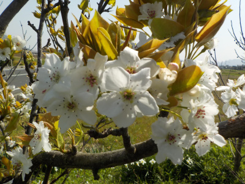
2品種同時に咲いたので、受粉作業をしました。
今年は梨が食べれそう。たぶん。
鉢植えの実生梨は今年も咲きませんでした。いつになったら咲くんだろう？
【梨TOP】
【果物TOP】
【園芸TOP】
2023/03/25
もうすぐ梨の花が咲きます。
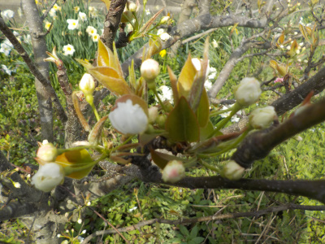
今年は品種違いの2本が同時に咲きそうなので、受粉が出来そうです。
【梨TOP】
【果物TOP】
【園芸TOP】
2022/12/25
実生の梨苗をスリット鉢に植え替えしました。
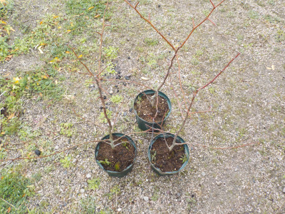
ちょっと成長したので鉢のサイズを少し大きくしました。
今までの鉢は苔が沢山生えていたので、通気性のいいスリット鉢にしました。水切れしないように注意したいと思います。
【梨TOP】
【果物TOP】
【園芸TOP】
2022/10/23
秋ですが、梨の小さい実を見つけました。
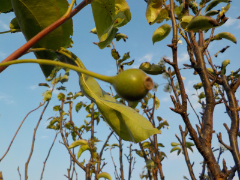
春には実が付かなかった梨に、実が出来ていました。
あー感じ悪い。なんで今頃出来てるんだろう。
秋なのに花もいっぱい咲いてるから、来年の春は花の数が少そうです。
うまくいかないです。
【梨TOP】 【果物TOP】 【園芸TOP】
2022/06/11
梨は病気中。
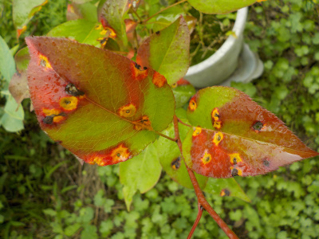
なんとなくこの赤くなる病気を見ると、スタウォースのファントムメナスに出てくるダーク・モールを思い出します。
【梨TOP】 【果物TOP】 【園芸TOP】
2022/04/17
鉢植えの梨にガットサイドを塗りました。
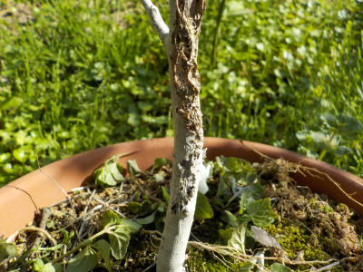
何者かは分かりませんが、根本のところをかじられていたので農薬を塗りました。
これで守れるかな？
【梨TOP】 【果物TOP】 【園芸TOP】
2022/04/16
梨の受粉が出来ませんでした。
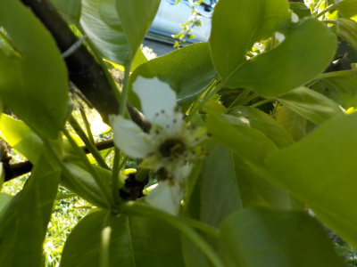
今年は梨の花が1本しか咲かず、受粉作業が出来ませんでした。
梨の花は時間が経ったため、もうボロボロです。
【梨TOP】 【果物TOP】 【園芸TOP】
2022/04/09
実生の梨は今年も花が咲かなそう。
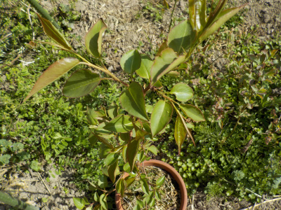
種を蒔いて3年経ちましたが、まだ花はないです。
今1本梨の花が咲いていますが、1本だけなので受粉が出来ません。
いつも受粉に使っている木はまだ咲きそうにないです。今年は受粉が出来ないかもしれない。
【梨TOP】 【果物TOP】 【園芸TOP】
2021/08/29
梨が狂い咲きしてます。
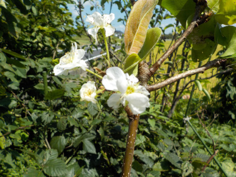
梨は毎年狂い咲きしている気がする。
こんなもんなんだろうな。
【梨TOP】 【果物TOP】 【園芸TOP】
2021/08/21
小さい梨をまた収獲しました。
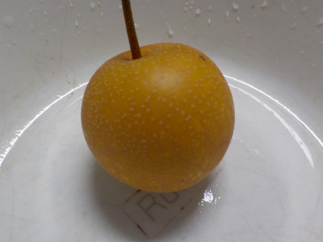
1週間前のよりちょっと甘かったかな。
ネットに、天気が続いた時は水やりすると実が大きくなるって記事がありました。
梨は水道の近くに植えていないので、水やりは出来ないかなー。
【梨TOP】 【果物TOP】 【園芸TOP】
2021/08/18
梨を食べました。
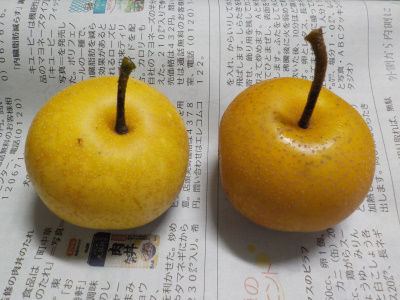
今年も小さな梨が出来ました。
両方共、甘さが少なかったです。肥料が少なかったのかな。
【梨TOP】 【果物TOP】 【園芸TOP】
2021/06/05
実生の梨が病気になりました。

赤星病ですね。
お隣にカイズカイブキがあるので仕方ないです。
少しでも離れた位置に移動した方がいいかな。
【梨TOP】 【果物TOP】 【園芸TOP】
2021/05/09
種蒔きした梨が順調に育っています。
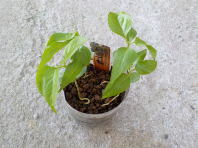
4個蒔いて全部育っています。
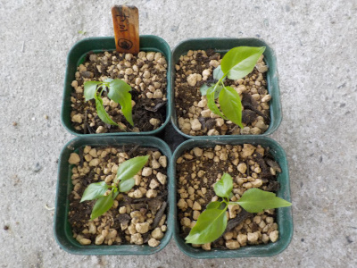
根が混まないうちに鉢上げしました。
鉢が小さすぎるかな？
ちょっと大きくなったら植替えしようと思います。
【梨TOP】 【果物TOP】 【園芸TOP】
2021/04/04
梨の種蒔きをしました。
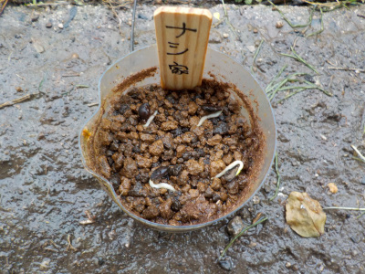
梨の実生は既にあるので育てなくてもいいんですけど、また育ててみたくなりました。
去年自分の家で実った梨の種です。
なんか育てた実の種って愛着があっていいかなーと。
【梨TOP】 【果物TOP】 【園芸TOP】
2021/03/28
梨の花が2品種同時に咲きました。
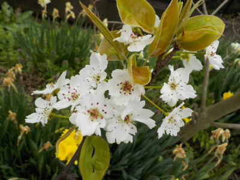
今年は2品種同時に咲いたので受粉がとってもしやすい。
沢山実が出来そうです。
楽しみです。
【梨TOP】 【果物TOP】 【園芸TOP】
2020/12/06
梨の木の紅葉が綺麗です。
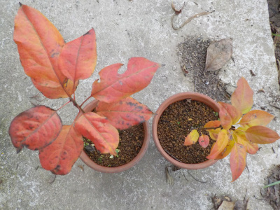
いい色に紅葉しました。
風当たりの弱い場所にあるので、葉っぱが落ちなくて紅葉できたかな？
この紅葉が毎年見れるなら庭木にしてもいいかも。
【梨TOP】 【果物TOP】 【園芸TOP】
2020/10/04
実生の梨を大きな鉢に植え替えしました。
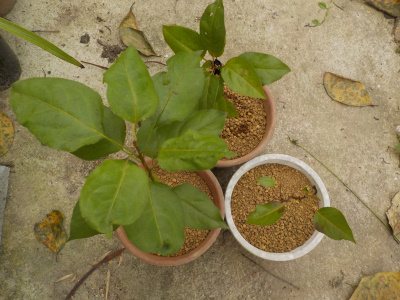
大きく育つように鉢を大きくしました。
同じような環境で育てていますが、大きさがまちまちです。
同じ梨から採ってもDNAが違うんだなーと思ってみています。
こうゆうのが普通でナチュラルらんですよね。
【梨TOP】 【果物TOP】 【園芸TOP】
2020/09/06
大型台風が来るそうなので梨を収獲しました。
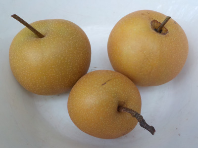
たぶん食べごろだと思うので、台風で落ちる前に収穫しました。
今年の収穫は3個です。
甘くて美味しかった。
もっと沢山収穫したいですね。
【梨TOP】 【果物TOP】 【園芸TOP】
2020/07/26
落ちた若い梨の実を食べてみました。
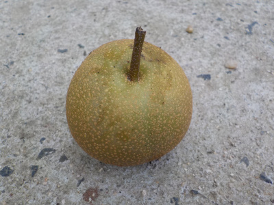
梨の実が落ちていました。
小さくて硬いですが、見た目綺麗なので食べても大丈夫かな？と思い試食しました。
苦くて渋くて不味いかと思ったんですが、薄い味でした。
ちょっとつまらない味でした。
【梨TOP】 【果物TOP】 【園芸TOP】
2020/07/04
梨に袋掛けをしました。
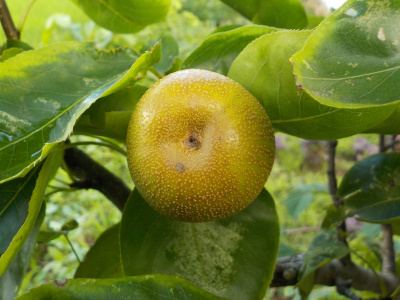
梨の実が出来ていました。
今年は開花のタイミングが悪かったので諦めていたんですが、少し実が出来ていました。
袋掛けをして大切に育てようと思います。
【梨TOP】 【果物TOP】 【園芸TOP】
2020/06/28
梨と蟻とアブラムシです。
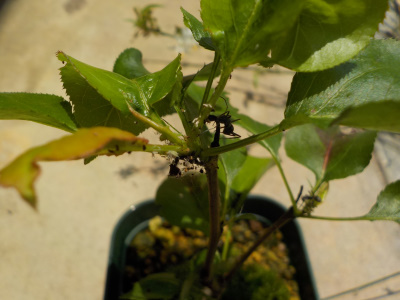
梨の木にアブラムシと蟻がいました。
養分が吸われています。
まだ小さい苗木なのに、よく気が付いてやって来ましたね。
シュシュっと薬を撒きました。
【梨TOP】 【果物TOP】 【園芸TOP】
2020/06/14
今年も梨の葉っぱを枯らしてしまいました。
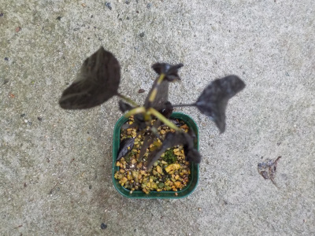
水不足で葉っぱを枯らしてしまいました。
多分すぐに復活すると思いますが、成長が少し遅くなりますね。
またならないよう、水やりに気をつけたいです。
【梨TOP】 【果物TOP】 【園芸TOP】
2020/03/08
梨の実生を植え替えしました。
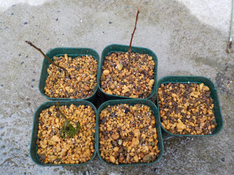
小さいポットから取り出したら、根っこがぐるぐるに張っていました。
もっと早く植え替えした方が良かったです。
実生は始めから根っこがあるので、小さいプラポットは長く使わない方がいいですね。
【梨TOP】 【果物TOP】 【園芸TOP】
2019/08/04
梨の苗が焼けてしまった。
夏の日射しに耐えれなかったようで、葉っぱがだいぶ枯れました。あーあ。
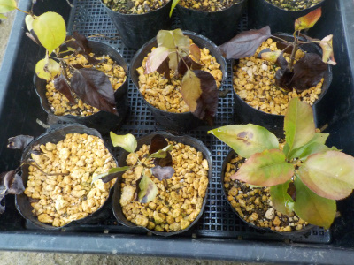
１本だけは何故か元気です。
これ以上駄目にならないように日陰に移動しました。
【梨TOP】 【果物TOP】 【園芸TOP】
2019/04/07
梨の芽をポットに植えました。
タッパーよりポットのほうが園芸してるって感じがします。
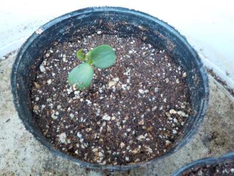
これから水の管理に注意です。
【梨TOP】 【果物TOP】 【園芸TOP】
2019/04/03
梨の種が発芽して育っています。
芽も根も大きくなっています。
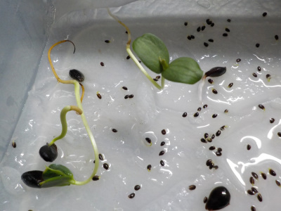
そろそろ土に植えた方がよさそうですね
（周りの小さいのはキウイの種です。）
【梨TOP】 【果物TOP】 【園芸TOP】
2019/03/10
梨の種を蒔きました。
キウイの種を蒔いたタッパーに梨の種も入れました。
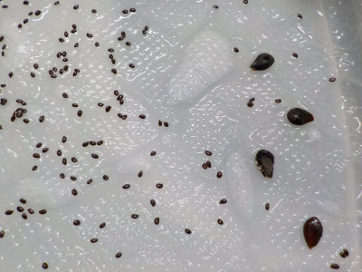
他にも種があったらここにドンドン入れちゃおうかと思うんですが、今のところ入れる種はないです。
【梨TOP】 【果物TOP】 【園芸TOP】
2018/07/01
梨の実ができていました。
今年は開花のタイミングが悪かったので、実がないと思っていました。
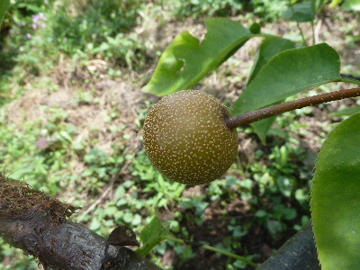
よく見たらちょっとありました。
袋かけして、大事に育てようと思います。
【梨TOP】 【果物TOP】 【園芸TOP】
2017/04/07
梨の受粉をしました。
花が咲いたので受粉です。
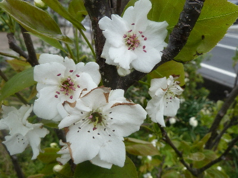
2種類の木が1本ずつあるんですが、片方だけ沢山咲いてます。
バランスが悪いなー。
早くもう1本も咲いて欲しいです。
【梨TOP】 【果物TOP】 【園芸TOP】
2017/08/26
梨の収獲をしました。
始めて家庭で梨の収獲が出来ました。
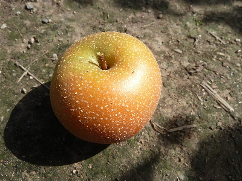
梨が小さいのでまだかなとも思いましたが、いい色になっているので収穫しました。
食べてみたら美味しかったので、家の梨はたぶん小さい種類か、あまり大きくならないんでしょう。
来年も実ができたら、同じ時期に収穫しようと思います。
【梨TOP】 【果物TOP】 【園芸TOP】
2017/05/07
今年は梨の小さいのがいっぱい出来ています。
受粉がいいタイミングで出来たようで、実がいっぱい出来ました。
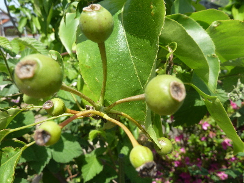
最終的に何個出来るかな。
楽しみだな。
【梨TOP】 【果物TOP】 【園芸TOP】
2015/10/10
梨の花が沢山咲いてしまった。
秋に花が沢山咲いてしまった。
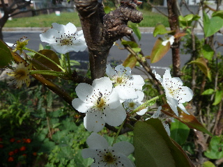
来年の春は花が少ないのかな？
【梨TOP】 【果物TOP】 【園芸TOP】
2015/04/11
梨の花は１本じゃ駄目なんですよね。
梨の花が咲いたんですけど、
花が咲いている木が1本しかないです。
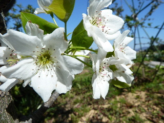
2本ないと受粉出来ないので、実は出来ません。
花だけ楽しみます。
【梨TOP】 【果物TOP】 【園芸TOP】
2013/04/07
梨の花が咲いていました。
まだ一度も実をつけたことない梨に花が咲いていました。

これ１種類１本しかないです。
なので、実をつけるのは難しいのかな？
ネットで検索してたら、違う品種のものを受粉するような事が書いてありました。
【梨TOP】
【果物TOP】
【園芸TOP】
畑仕事じゃないよ。
【おいしいものを食べよう。】【たくさん寝よう。】
【ソロ活をしよう!】【季節感のあることをしよう。】【動画視聴はほどほどに。】【当サイトの全てのコンテンツは無断転載禁止です。】